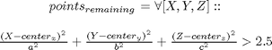

remove_self_scaning
Description: pass into this function a group of 3D points and pass in the newQ to remove scanning point from place where the arm is located. Links higher up the arm have a larger force field than their actual force part force field to account for errors in the data which may result in obstacles where there aren't actually any Lower down (links 1,2) are larger and hence have a smaller removal force field. We then pass back the points that are only outside of these joints force fields
Contents
Function Call
Inputs:
points (3*m double) holds the points in space
newQ (6*1 double) holds the joint angles in radians
Returns:
points (3*m double) holds the remaining points in space
function points = remove_self_scanning(points,newQ)
Variables
global r Q densoobj % if we haven't been passed the joints then if nargin<2 newQ=Q; end n = r.n; L = r.link; t = r.base;
Go through each link of robot (1->n)
for i=1:n t = t * L{i}(newQ(i)); % Translate points to the elispe coordinate frame (IE leave the elispes % where they were to start off with and translate the world around them translated_points=[points(:,1)-t(1,4) points(:,2)-t(2,4) points(:,3)-t(3,4)]; translated_points=(t(1:3,1:3)'*translated_points')';
For the first 2 links: Get points outside this ellipse
if n<3 points=points((((translated_points(:,1)-densoobj(i+1).ellipse.center(1)).^2)/densoobj(i+1).ellipse.params(1)^2+... ((translated_points(:,2)-densoobj(i+1).ellipse.center(2)).^2)/densoobj(i+1).ellipse.params(2)^2+... ((translated_points(:,3)-densoobj(i+1).ellipse.center(3)).^2)/densoobj(i+1).ellipse.params(3)^2>1.5),:);
For the remaining n-2 links: Get point outside this ellipse

else points=points((((translated_points(:,1)-densoobj(i+1).ellipse.center(1)).^2)/densoobj(i+1).ellipse.params(1)^2+... ((translated_points(:,2)-densoobj(i+1).ellipse.center(2)).^2)/densoobj(i+1).ellipse.params(2)^2+... ((translated_points(:,3)-densoobj(i+1).ellipse.center(3)).^2)/densoobj(i+1).ellipse.params(3)^2>2.5),:); end end